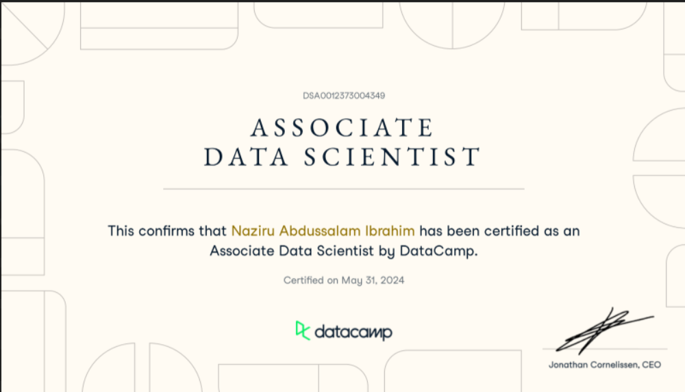

I aspire to become an AI Engineer, building intelligent solutions that address real-world problems. I started my journey with Python and gradually expanded into data science, machine learning, and deep learning. My goal is to develop strong expertise in AI over the next five years through continuous learning, hands-on projects, and keeping up with emerging technologies. I am passionate about contributing to innovation and progress in Nigeria and globally through the power of artificial intelligence.

A retail company is on a transformative journey, aiming to elevate their customer services through cutting-edge advancements in Speech Recognition and Natural Language Processing (NLP). As the machine learning engineer for this initiative, you are tasked with developing functionalities that not only convert customer support audio calls into text but also explore methodologies to extract insights from transcribed texts.
Does going to university in a different country affect your mental health? A Japanese international university surveyed its students in 2018 and published a study the following year that was approved by several ethical and regulatory boards.
Every year, American high school students take SATs, which are standardized tests intended to measure literacy, numeracy, and writing skills. There are three sections - reading, math, and writing, each with a maximum score of 800 points. These tests are extremely important for students and colleges, as they play a pivotal role in the admissions process.
Netflix! What started in 1997 as a DVD rental service has since exploded into one of the largest entertainment and media companies. Given the large number of movies and series available on the platform, it is a perfect opportunity to flex your exploratory data analysis skills and dive into the entertainment industry.